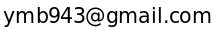

▪️ First name: YoungMin, Family name: Bhak
▪️ Nationality: Republic of Korea
▪️ E-mail: 
▪️ 2024.02 - / M.S. and Ph.D. combined student in Biomedical Engineering at UNIST (Ulsan National Institute of Science and Technology)
▪️ 2019.09 - 2023.02 / B.S. in Computer Science at Korea National Open University
▪️ 2024.02 - / UNIST (Ulsan National Institute of Science and Technology) / M.S. and Ph.D. student
▪️ 2022.11 - / Inas AI / CEO and lecturer
▪️ 2022.02 - 2024.01 / CHA Bundang Medical Center (Republic of Korea) / A.I. researcher in the medicine domain
▪️ 2019.08 - 2022.01 / B Link Healthcare Inc. (Republic of Korea) / Data scientist in the healthcare domain
▪️ 2018.06 - 2019.07 / Sticheo Pte Ltd. (Singapore, Remotely) / Machine learning engineer for the video editing
▪️ Reversing aging and Overcoming diseases
▪️ A.I. and Computer science
▪️ Genomics, Bioinformatics, Biology, Medicine
▪️ ORCID
▪️ Github
2024
▪️ 5. A blockchain-based healthcare data marketplace: prototype and demonstration (co-author)
▪️ 4. DR3E-Net: Drug Repurposing Network Framework Based on Deep Embedding, Differentially Expressed Genes, and Drug Side Effects (first & correspondence)
▪️ 3. Multimodal Deep Learning Algorithm for Detection of Kidney Disease From Retinal Images and Urinalysis (co-first)
▪️ 2. Machine Learning Models for Low Back Pain Detection and Factor Identification: Insights from a 6-Year Nationwide Survey (co-first)
2023
▪️ 1. Machine-Learning Enhancement of Urine Dipstick Tests for Chronic Kidney Disease Detection (co-author)